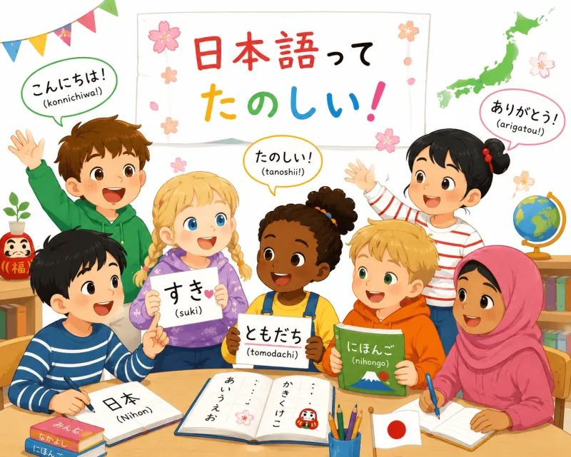

Cours en ligne pour enfants
Tout-petits et enfants
Des leçons ludiques et personnalisées pour découvrir le japonais, prendre confiance et apprendre à s’exprimer avec plaisir.
Pour qui ? Tout-petits et enfants
Format : En ligne · 25 minutes
Tarif : 20 € par cours
Pack : 5 cours · 80 € (1 cours offert)
Une approche adaptée à chaque enfant
Dans mes cours, j’encourage les enfants à répondre progressivement par des phrases complètes afin de développer leur expression orale en japonais.
Par exemple, lorsqu’on montre une image et qu’on demande : « Qu’est-ce que c’est ? », répondre simplement « Un chat ! » est bien sûr correct. Cependant, nous nous entraînons également à répondre par une phrase complète, comme « C’est un chat. », afin d’encourager les enfants à parler davantage et à gagner en aisance.
Selon l’âge, le niveau et les centres d’intérêt de chaque enfant, les cours peuvent inclure des jeux, des activités de shiritori, la lecture d’albums japonais, l’apprentissage des hiragana, katakana et kanji, la correction de petits textes ou journaux, ainsi que des activités créatives comme l’origami.
Si vous avez des souhaits particuliers ou des objectifs spécifiques, n’hésitez pas à m’en faire part. Ensemble, nous construirons des cours à la fois ludiques, motivants et adaptés à votre enfant.
Commencer par un cours d’essai gratuit
Réservez un créneau disponible et indiquez le prénom de votre enfant ainsi que son niveau de japonais, même approximatif.
Réserver le cours d’essai